Resonance builds digital twins of your target audience and evaluates new product concepts in seconds—giving you directional signal before you commit to a full study.
Define your audience, enter your concepts, and get scored feedback with qualitative reasoning in under a minute.
Build personas from demographic and psychographic inputs—age, occupation, income, Big Five personality traits, needs, and pain points. Start from a template or configure your own. Enrich with real respondent data when you have it.
Each digital twin evaluates your new product concepts using Semantic Similarity Rating methodology, generating Willingness to Use and Willingness to Pay scores with qualitative reasoning.
Get directional insights before committing to a full study. Screen concepts early, rank variants, and focus your research budget where it matters most.

Resonance uses Semantic Similarity Rating (SSR), a method developed by Maier et al. (arXiv:2510.08338). SSR measures cosine similarity between vector embeddings of synthetic survey responses and Likert scale reference statements to produce statistically grounded scores. The more precisely a persona is calibrated to a real audience—through demographic and psychographic data—the stronger the signal.
Whether you're screening early concepts or stretching the life of a completed study, Resonance fits where your existing workflow leaves off.
Test a dozen product variants against your audience before investing in a new study. Get ranked scores with persona-level reasoning in under a minute.
Skip the six-week study for early-stage questions. Resonance gives you scored, persona-level feedback in under a minute—so you can eliminate weak concepts before investing in full research.
Survey a market once, then use digital twins to evaluate product variations, pricing tiers, and positioning options without re-fielding.
For agencies and consultancies: stand up a concept testing capability for clients without fielding a new study. Directional results in the same meeting.
Try Resonance now, or schedule a call with the Alderman+Ward team to walk through it together.